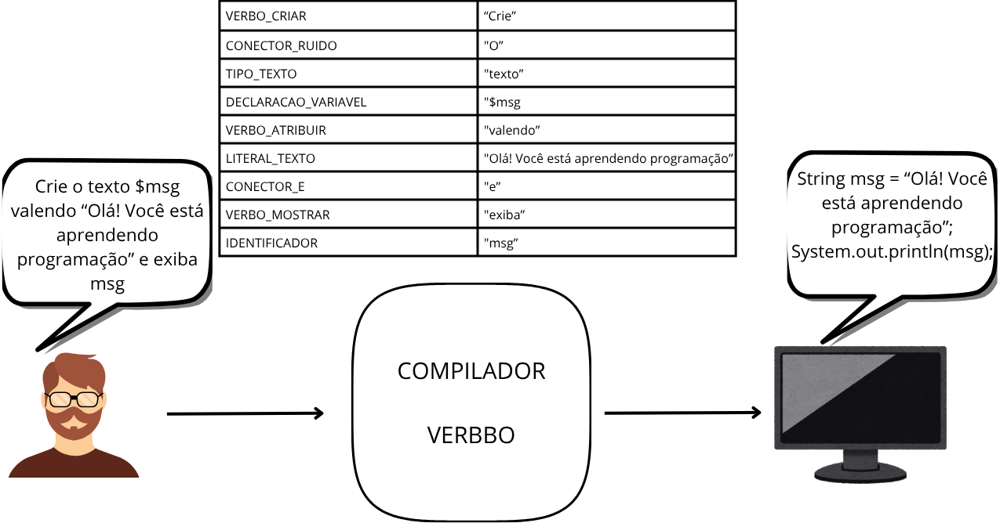

Ei você, Java Dev!!!!!

Cansado de estar em um relacionamento onde a máquina não te compreende?
Cansado de estar em um relacionamento onde a máquina não te compreende?
Você precisa se rebaixar a uma linguagem de baixo nível para que então o seu computador entenda o que você deseja dele. Mas e se fosse diferente? Já sonhou na possibilidade de poder falar na sua linguagem de alto nível e seu computador te entenda? Então não precisa mais fechar os olhos, pois temos o privilégio de apresentar:
O verbbo é um compilador que tem como objetivo traduzir a língua humana em código, mas especificamente em código java, sem a necessidade nenhuma de você precisar escrever uma linha de código na linguagem. Apenas diga o que você quer que o compilador faz todo o resto
O verbbo tem a capacidade de receber um arquivo .txt contendo instruções escritas e as transforma em código e então retorna novamente o arquivo .txt. Parece mágica, mas como isso funciona exatamente?
O compilador possui diversos tokens que são funcionalidades básicas de uma linguagem como criação de variavel, soma, exibir resultado, etc. Esses tokens estão ligados a palavras reservadas, assim ao receber o .txt, o compilador buscará as palavras reservadas contidas no arquivo e associará ao seu devido token. Dessa forma o verbbo é capaz de traduzir a linguagem humana em código.

Para utilizar o compilador verboo é simples, deve simplestemente seguir os seguintes passos:
 Coloque uma descrição do que você deseja dentro de um arquivo .txt
Coloque uma descrição do que você deseja dentro de um arquivo .txt Ao descrever o que deseja, utilize das palavras reservadas que estejam de acordo com a ação que deseja
Ao descrever o que deseja, utilize das palavras reservadas que estejam de acordo com a ação que deseja Espere o verbbo realizar a tradução
Espere o verbbo realizar a tradução